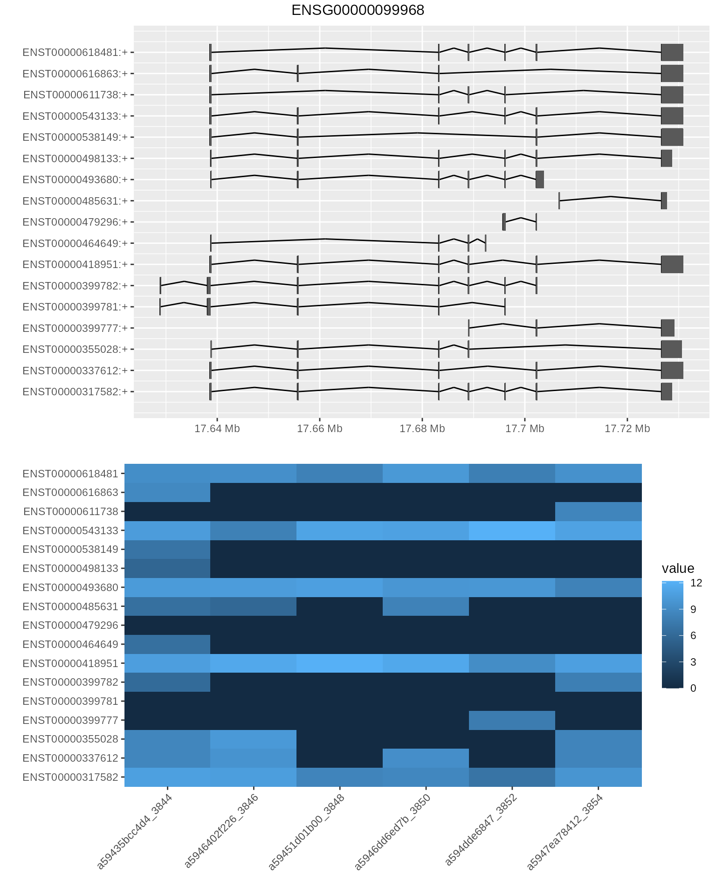

vignettes/bambu.Rmd
bambu.RmdBambu is a method for transcript discovery and quantification from long read RNA-Seq data. Bambu uses aligned reads and genome reference annotations as input, and will return abundance estimates for all known transcripts and for newly discovered transcripts. Bambu uses the information from the reference annotations to correct misalignment at splice junctions, then reduces the aligned reads to read equivalent classes, and uses this information to identify novel transcripts across all samples of interest. Reads are then assigned to transcripts, and expression estimates are obtained using an expectation maximisation algorithm. Here, we present an example workflow for analysing Nanopore long read RNA-Sequencing data from two human cancer cell lines from the Singapore Nanopore Expression Project (SG-NEx).
You can install bambu from github:
if (!requireNamespace("BiocManager", quietly = TRUE)) install.packages("BiocManager")
BiocManager::install("bambu")
BiocManager::install("NanoporeRNASeq")The default mode to run bambu is using a set of aligned reads (bam files), reference genome annotations (gtf file, TxDb object, or bambuAnnotation object), and reference genome sequence (fasta file or BSgenome). bambu will return a summarizedExperiment object with the genomic coordinates for annotated and new transcripts and transcript expression estimates. We highly recommend to use the same annotations that were used for genome alignment. If you have a gtf file and fasta file you can run bambu with the following options:
library(bambu)
test.bam <- system.file("extdata", "SGNex_A549_directRNA_replicate5_run1_chr9_1_1000000.bam",
package = "bambu")
fa.file <- system.file("extdata", "Homo_sapiens.GRCh38.dna_sm.primary_assembly_chr9_1_1000000.fa",
package = "bambu")
gtf.file <- system.file("extdata", "Homo_sapiens.GRCh38.91_chr9_1_1000000.gtf", package = "bambu")
bambuAnnotations <- prepareAnnotations(gtf.file)
se <- bambu(reads = test.bam, annotations = bambuAnnotations, genome = fa.file)
##>
|
| | 0%
|
|======================================================================| 100%
##>
##>
|
| | 0%
|
|======================================================================| 100%
##>
##>
|
| | 0%
|
|======================================================================| 100%
##>
##>
|
| | 0%
|
|======================================================================| 100%
##>
##>
|
| | 0%
|
|======================================================================| 100%
##>
##>
|
| | 0%
|
|======================================================================| 100%bambu returns a SummarizedExperiment object which can be accessed as follows:
Nanopore RNA-Seq data {#complete-workflow} To demonstrate the usage of Bambu, we used long-read RNA-Seq data generated using Oxford Nanopore Sequencing from the NanoporeRNASeq package, which consists of 6 samples from two human cell lines (K562 and MCF7) that were generated by the SG-NEx project. Each of these cell lines has three replicates, with 1 direct RNA sequencing run and 2 cDNA sequencing runs. Reads are aligned to chromosome 22 (Grch38) and stored as bam files. In this workflow, we will demonstrate how to apply bambu to these bam files to identify novel transcripts and estimates transcript expression, visualize the results, and identify differentially expressed genes and transcripts.
bambu takes genomic alignments saved in bam files. Here we use bam-files from the NanoporeRNASeq package, which contains reads aligned to the first half of the human chromosome 22 using minimap2.
library(bambu)
library(NanoporeRNASeq)
data("SGNexSamples")
SGNexSamples
##> DataFrame with 6 rows and 6 columns
##> sample_id Platform cellLine protocol cancer_type
##> <character> <character> <character> <character> <character>
##> 1 K562_directcDNA_repl.. MinION K562 directcDNA Leukocyte
##> 2 K562_directcDNA_repl.. GridION K562 directcDNA Leukocyte
##> 3 K562_directRNA_repli.. GridION K562 directRNA Leukocyte
##> 4 MCF7_directcDNA_repl.. MinION MCF7 directcDNA Breast
##> 5 MCF7_directcDNA_repl.. GridION MCF7 directcDNA Breast
##> 6 MCF7_directRNA_repli.. GridION MCF7 directRNA Breast
##> fileNames
##> <character>
##> 1 NanoporeRNASeq/versi..
##> 2 NanoporeRNASeq/versi..
##> 3 NanoporeRNASeq/versi..
##> 4 NanoporeRNASeq/versi..
##> 5 NanoporeRNASeq/versi..
##> 6 NanoporeRNASeq/versi..
library(ExperimentHub)
NanoporeData <- query(ExperimentHub(), c("NanoporeRNA", "GRCh38", "BAM"))
bamFiles <- Rsamtools::BamFileList(NanoporeData[["EH3808"]], NanoporeData[["EH3809"]],
NanoporeData[["EH3810"]], NanoporeData[["EH3811"]], NanoporeData[["EH3812"]],
NanoporeData[["EH3813"]])bambu additionally requires a genome sequence, which is used to correct splicing junctions in read alignments. Ideally, we recommend to use the same genome seqeunce file that was used for alignment to be used for bambu.
# get path to fasta file
genomeSequenceData <- query(ExperimentHub(), c("NanoporeRNA", "GRCh38", "FASTA"))
genomeSequence <- genomeSequenceData[["EH7260"]]As an option, users can also choose to use a BSgenome object:
library(BSgenome.Hsapiens.NCBI.GRCh38)
genomeSequenceBsgenome <- BSgenome.Hsapiens.NCBI.GRCh38{#annotations}
bambu also requires a reference transcript annotations object, which is used to correct read alignments, to identify for transcripts and genes (and the type for novel transcripts), and for quantification. The annotation object can be created from a gtf file:
gtf.file <- system.file("extdata", "Homo_sapiens.GRCh38.91_chr9_1_1000000.gtf", package = "bambu")
annotation <- prepareAnnotations(gtf.file)The annotation object can also be created from a TxDb object:
txdb <- system.file("extdata", "Homo_sapiens.GRCh38.91_chr9_1_1000000.gtf", package = "bambu")
annotation <- prepareAnnotations(txdb)The annotation object can be stored and used again for re-running bambu. Here we will used the annotation object from the NanoporeRNASeq package that wasis prepared from a gtf file using the function in by function in bambu.
data("HsChr22BambuAnnotation")
HsChr22BambuAnnotation
##> GRangesList object of length 1500:
##> $ENST00000043402
##> GRanges object with 2 ranges and 2 metadata columns:
##> seqnames ranges strand | exon_rank exon_endRank
##> <Rle> <IRanges> <Rle> | <integer> <integer>
##> [1] 22 20241415-20243110 - | 2 1
##> [2] 22 20268071-20268531 - | 1 2
##> -------
##> seqinfo: 1 sequence from an unspecified genome; no seqlengths
##>
##> $ENST00000086933
##> GRanges object with 3 ranges and 2 metadata columns:
##> seqnames ranges strand | exon_rank exon_endRank
##> <Rle> <IRanges> <Rle> | <integer> <integer>
##> [1] 22 19148576-19149095 - | 3 1
##> [2] 22 19149663-19149916 - | 2 2
##> [3] 22 19150025-19150283 - | 1 3
##> -------
##> seqinfo: 1 sequence from an unspecified genome; no seqlengths
##>
##> $ENST00000155674
##> GRanges object with 8 ranges and 2 metadata columns:
##> seqnames ranges strand | exon_rank exon_endRank
##> <Rle> <IRanges> <Rle> | <integer> <integer>
##> [1] 22 17137511-17138357 - | 8 1
##> [2] 22 17138550-17138738 - | 7 2
##> [3] 22 17141059-17141233 - | 6 3
##> [4] 22 17143098-17143131 - | 5 4
##> [5] 22 17145024-17145117 - | 4 5
##> [6] 22 17148448-17148560 - | 3 6
##> [7] 22 17149542-17149745 - | 2 7
##> [8] 22 17165209-17165287 - | 1 8
##> -------
##> seqinfo: 1 sequence from an unspecified genome; no seqlengths
##>
##> ...
##> <1497 more elements>Next we apply bambu on the input data (bam files, annotations, genomeSequence). Bambu will perform isoform discovery to extend the provided annotation, and then quantify the transcript expression from these extended annotation using an Expectation-Maximisation algorithm. Here we will use 1 core, which can be changed to process multiple files in parallel.
se <- bambu(reads = bamFiles, annotations = HsChr22BambuAnnotation, genome = genomeSequence,
ncore = 1)
se
##> class: RangedSummarizedExperiment
##> dim: 1511 6
##> metadata(0):
##> assays(6): counts CPM ... uniqueCounts theta
##> rownames(1511): tx.1 tx.2 ... ENST00000641933 ENST00000641967
##> rowData names(6): TXNAME GENEID ... readCount txNDR
##> colnames(6): a59435bcc4d4_3844 a5946402f226_3846 ... a594dde6847_3852
##> a5947ea78412_3854
##> colData names(3): name d_rate nGeneFordRateFor the downstream analysis, we will add the condition of interest to the object that describes the samples. Here we are interested in a comparison of the 2 cell lines:
colData(se)$condition <- as.factor(SGNexSamples$cellLine)Optionally, users can choose to apply bambu to do quantification only (without isoform discovery)
seUnextended <- bambu(reads = bamFiles, annotations = HsChr22BambuAnnotation, genome = genomeSequence,
discovery = FALSE)
seUnextended
##> class: RangedSummarizedExperiment
##> dim: 1500 6
##> metadata(0):
##> assays(6): counts CPM ... uniqueCounts theta
##> rownames(1500): ENST00000043402 ENST00000086933 ... ENST00000641933
##> ENST00000641967
##> rowData names(3): TXNAME GENEID eqClass
##> colnames(6): a59435bcc4d4_3844 a5946402f226_3846 ... a594dde6847_3852
##> a5947ea78412_3854
##> colData names(3): name d_rate nGeneFordRatebambu provides functions to visualise and explore the results. When multiple samples are used, we can visualise the correlation and clustering of all samples with a heatmap:
Additionally, we can also visualise the correlation with a 2-dimmensional PCA plot.
plotBambu(se, type = "pca")In addition to visualising the correlation between samples, bambu also provide a function to visualise the extended annotation and expression estimation for individual genes. Here we look at gene ENSG00000099968 and visualise the transcript coordinates for annotated and novel isoforms and expression levels for these isoforms across all samples.
plotBambu(se, type = "annotation", gene_id = "ENSG00000099968")
##> [[1]]
##> TableGrob (3 x 1) "arrange": 3 grobs
##> z cells name grob
##> 1 1 (2-2,1-1) arrange gtable[layout]
##> 2 2 (3-3,1-1) arrange gtable[layout]
##> 3 3 (1-1,1-1) arrange text[GRID.text.250]{#gene-expression} Gene expression can be calculated from the transcript expression estimates returned by bambu using the function. Looking at the output, we can see there are novel genes identified as well
seGene <- transcriptToGeneExpression(se)
seGene
##> class: RangedSummarizedExperiment
##> dim: 574 6
##> metadata(0):
##> assays(2): counts CPM
##> rownames(574): ENSG00000015475 ENSG00000040608 ... gene.43 gene.45
##> rowData names(2): GENEID newGeneClass
##> colnames(6): a59435bcc4d4_3844 a5946402f226_3846 ... a594dde6847_3852
##> a5947ea78412_3854
##> colData names(4): name d_rate nGeneFordRate conditionWe can again use the function to visualise the gene expression data across the 6 samples with a heatmap or PCA plot. As expected, samples from the same cell line showed higher correlation than across the cell lines.
colData(seGene)$groupVar <- SGNexSamples$cellLine
plotBambu(seGene, type = "heatmap")bambu includes a function to write the extended annotations, the transcript and the gene expression estimates that include any newly discovered genes and transcripts to text files.
save.dir <- tempdir()
writeBambuOutput(se, path = save.dir, prefix = "NanoporeRNASeq_")bambu also includes a function that only exports the extended annotations to gtf file:
save.file <- tempfile(fileext = ".gtf")
writeToGTF(rowRanges(se), file = save.file)One of the most common tasks when analysing RNA-Seq data is the analysis of differential gene expression across a condition of intertest. Here we use DESeq2 to find the differentially expressed genes between MCF7 and K562 cell lines. Similar to using results from Salmon, estimates from bambu will first be rounded.
library(DESeq2)
dds <- DESeqDataSetFromMatrix(round(assays(seGene)$counts), colData = colData(se),
design = ~condition)
dds.deseq <- DESeq(dds)
deGeneRes <- DESeq2::results(dds.deseq, independentFiltering = FALSE)
head(deGeneRes[order(deGeneRes$padj), ])
##> log2 fold change (MLE): condition MCF7 vs K562
##> Wald test p-value: condition MCF7 vs K562
##> DataFrame with 6 rows and 6 columns
##> baseMean log2FoldChange lfcSE stat
##> <numeric> <numeric> <numeric> <numeric>
##> ENSG00000185686 500.6470 -7.15159 0.500364 -14.29278
##> ENSG00000283633 95.7518 -9.10519 1.246517 -7.30451
##> ENSG00000197077 26.9189 9.17563 1.320390 6.94918
##> ENSG00000240972 2443.3934 2.47082 0.357369 6.91392
##> ENSG00000099977 235.8601 1.92963 0.306609 6.29347
##> ENSG00000169635 43.5245 -3.36897 0.569649 -5.91411
##> pvalue
##> <numeric>
##> ENSG00000185686 0.000000000000000000000000000000000000000000000242728
##> ENSG00000283633 0.000000000000278275679947613751071839495840056657549
##> ENSG00000197077 0.000000000003674139901044937399445365779334784031053
##> ENSG00000240972 0.000000000004714473225561034087277656270998130953048
##> ENSG00000099977 0.000000000310450546572304490812751211792114465481962
##> ENSG00000169635 0.000000003336692881462347780346996492929594058107767
##> padj
##> <numeric>
##> ENSG00000185686 0.0000000000000000000000000000000000000000000631093
##> ENSG00000283633 0.0000000000361758383931897894568746600884185651500
##> ENSG00000197077 0.0000000003064407596614672382912675321117289967132
##> ENSG00000240972 0.0000000003064407596614672382912675321117289967132
##> ENSG00000099977 0.0000000161434284217598349698291349809883832300272
##> ENSG00000169635 0.0000001445900248633684085023933191607725667893192A quick summary of differentially expressed genes
summary(deGeneRes)
##>
##> out of 260 with nonzero total read count
##> adjusted p-value < 0.1
##> LFC > 0 (up) : 19, 7.3%
##> LFC < 0 (down) : 22, 8.5%
##> outliers [1] : 0, 0%
##> low counts [2] : 0, 0%
##> (mean count < 0)
##> [1] see 'cooksCutoff' argument of ?results
##> [2] see 'independentFiltering' argument of ?resultsWe can also visualise the MA-plot for differentially used isoforms using . However, visualizing the MA-plots using the original log-fold change results will be affected by the noise associated with log2 fold changes from low count genes without requiring arbitrary filtering thresholds. As recommended in the [DESeq2tutorial] (http://bioconductor.org/packages/devel/bioc/vignettes/DESeq2/inst/doc/ DESeq2.html#alternative-shrinkage-estimators). we applied the same shrinkage to effect sizes to improve the visualization.
We used DEXSeq to detect alternative used isoforms.
library(DEXSeq)
dxd <- DEXSeqDataSet(countData = round(assays(se)$counts), sampleData = as.data.frame(colData(se)),
design = ~sample + exon + condition:exon, featureID = rowData(se)$TXNAME, groupID = rowData(se)$GENEID)
dxr <- DEXSeq(dxd)
head(dxr)
##>
##> LRT p-value: full vs reduced
##>
##> DataFrame with 6 rows and 12 columns
##> groupID featureID exonBaseMean dispersion
##> <character> <character> <numeric> <numeric>
##> gene.30:tx.1 gene.30 tx.1 9.059656 NA
##> gene.35:tx.2 gene.35 tx.2 1.046280 NA
##> gene.12:tx.3 gene.12 tx.3 1.054917 NA
##> ENSG00000184702:tx.4 ENSG00000184702 tx.4 32.603977 0.904926
##> ENSG00000183506:tx.5 ENSG00000183506 tx.5 14.804874 1.399612
##> gene.45:tx.6 gene.45 tx.6 0.767463 NA
##> stat pvalue padj K562 MCF7
##> <numeric> <numeric> <numeric> <numeric> <numeric>
##> gene.30:tx.1 NA NA NA NA NA
##> gene.35:tx.2 NA NA NA NA NA
##> gene.12:tx.3 NA NA NA NA NA
##> ENSG00000184702:tx.4 1.86587 0.171949 0.591465 1.31079 1.64896
##> ENSG00000183506:tx.5 1.32103 0.250408 0.631578 1.06310 1.20895
##> gene.45:tx.6 NA NA NA NA NA
##> log2fold_MCF7_K562 genomicData countData
##> <numeric> <GRangesList> <matrix>
##> gene.30:tx.1 NA 36:48:5:...
##> gene.35:tx.2 NA 9:5:0:...
##> gene.12:tx.3 NA 8:3:2:...
##> ENSG00000184702:tx.4 1.162939 24:132:88:...
##> ENSG00000183506:tx.5 0.522927 43:61:24:...
##> gene.45:tx.6 NA 5:5:0:...We can visualize the MA-plot
plotMA(dxr, cex = 0.8)For larger sample numbers we recommend to write the processed data to a file. This can be done by providing the readClass.outputDir:
se <- bambu(reads = bamFiles, rcOutDir = "./bambu/", annotations = annotaiton, genome = genomeSequence)For transcript discovery we recommend to adjust the parameters according to the number of replicates and the sequencing throughput. The most relevant parameters are explained here. You can use any combination of these parameters. ### More stringent filtering thresholds imposed on potential novel transcripts
Questions and issues can be raised at the Bioconductor support site (once bambu is available through bioconductor): https://support.bioconductor.org. Please tag your your posts with bambu.
Alternatively, issues can be raised at the bambu Github repository:https://github.com/GoekeLab/bambu.
A manuscript describing bambu is currently in preparation. If you use bambu for your research, please cite using the following doi: 10.5281/zenodo.3900025.
sessionInfo()
##> R version 4.1.0 (2021-05-18)
##> Platform: x86_64-pc-linux-gnu (64-bit)
##> Running under: Ubuntu 20.04.3 LTS
##>
##> Matrix products: default
##> BLAS: /usr/lib/x86_64-linux-gnu/openblas-pthread/libblas.so.3
##> LAPACK: /usr/lib/x86_64-linux-gnu/openblas-pthread/liblapack.so.3
##>
##> locale:
##> [1] LC_CTYPE=en_SG.UTF-8 LC_NUMERIC=C
##> [3] LC_TIME=en_SG.UTF-8 LC_COLLATE=en_SG.UTF-8
##> [5] LC_MONETARY=en_SG.UTF-8 LC_MESSAGES=en_SG.UTF-8
##> [7] LC_PAPER=en_US.UTF-8 LC_NAME=C
##> [9] LC_ADDRESS=C LC_TELEPHONE=C
##> [11] LC_MEASUREMENT=en_SG.UTF-8 LC_IDENTIFICATION=C
##>
##> attached base packages:
##> [1] stats4 stats graphics grDevices utils datasets methods
##> [8] base
##>
##> other attached packages:
##> [1] DEXSeq_1.39.0
##> [2] RColorBrewer_1.1-2
##> [3] AnnotationDbi_1.55.1
##> [4] BiocParallel_1.27.4
##> [5] apeglm_1.15.0
##> [6] DESeq2_1.33.4
##> [7] ggplot2_3.3.5
##> [8] BSgenome.Hsapiens.NCBI.GRCh38_1.3.1000
##> [9] BSgenome_1.61.0
##> [10] rtracklayer_1.53.1
##> [11] Rsamtools_2.9.1
##> [12] Biostrings_2.61.2
##> [13] XVector_0.33.0
##> [14] NanoporeRNASeq_1.3.3
##> [15] ExperimentHub_2.1.4
##> [16] AnnotationHub_3.1.5
##> [17] BiocFileCache_2.1.1
##> [18] dbplyr_2.1.1
##> [19] bambu_1.99.0
##> [20] SummarizedExperiment_1.23.4
##> [21] Biobase_2.53.0
##> [22] GenomicRanges_1.45.0
##> [23] GenomeInfoDb_1.29.4
##> [24] IRanges_2.27.2
##> [25] S4Vectors_0.31.2
##> [26] BiocGenerics_0.39.2
##> [27] MatrixGenerics_1.5.3
##> [28] matrixStats_0.60.1
##>
##> loaded via a namespace (and not attached):
##> [1] utf8_1.2.2 tidyselect_1.1.1
##> [3] RSQLite_2.2.8 htmlwidgets_1.5.3
##> [5] grid_4.1.0 munsell_0.5.0
##> [7] codetools_0.2-18 ragg_1.1.3
##> [9] statmod_1.4.36 xgboost_1.4.1.1
##> [11] withr_2.4.2 colorspace_2.0-2
##> [13] filelock_1.0.2 OrganismDbi_1.35.0
##> [15] highr_0.9 knitr_1.33
##> [17] rstudioapi_0.13 labeling_0.4.2
##> [19] bbmle_1.0.24 GenomeInfoDbData_1.2.6
##> [21] hwriter_1.3.2 bit64_4.0.5
##> [23] farver_2.1.0 rprojroot_2.0.2
##> [25] coda_0.19-4 vctrs_0.3.8
##> [27] generics_0.1.0 xfun_0.25
##> [29] biovizBase_1.41.0 R6_2.5.1
##> [31] doParallel_1.0.16 clue_0.3-59
##> [33] locfit_1.5-9.4 AnnotationFilter_1.17.1
##> [35] bitops_1.0-7 cachem_1.0.6
##> [37] reshape_0.8.8 DelayedArray_0.19.1
##> [39] assertthat_0.2.1 promises_1.2.0.1
##> [41] BiocIO_1.3.0 scales_1.1.1
##> [43] nnet_7.3-16 gtable_0.3.0
##> [45] ggbio_1.41.0 ensembldb_2.17.4
##> [47] rlang_0.4.11 genefilter_1.75.1
##> [49] systemfonts_1.0.3 GlobalOptions_0.1.2
##> [51] splines_4.1.0 lazyeval_0.2.2
##> [53] dichromat_2.0-0 checkmate_2.0.0
##> [55] BiocManager_1.30.16 yaml_2.2.1
##> [57] reshape2_1.4.4 GenomicFeatures_1.45.1
##> [59] backports_1.2.1 httpuv_1.6.2
##> [61] Hmisc_4.5-0 RBGL_1.69.0
##> [63] tools_4.1.0 ellipsis_0.3.2
##> [65] jquerylib_0.1.4 Rcpp_1.0.7
##> [67] plyr_1.8.6 base64enc_0.1-3
##> [69] progress_1.2.2 zlibbioc_1.39.0
##> [71] purrr_0.3.4 RCurl_1.98-1.4
##> [73] prettyunits_1.1.1 rpart_4.1-15
##> [75] GetoptLong_1.0.5 cluster_2.1.2
##> [77] fs_1.5.0 magrittr_2.0.1
##> [79] data.table_1.14.0 circlize_0.4.13
##> [81] mvtnorm_1.1-2 ProtGenerics_1.25.1
##> [83] hms_1.1.0 mime_0.11
##> [85] evaluate_0.14 xtable_1.8-4
##> [87] XML_3.99-0.7 emdbook_1.3.12
##> [89] jpeg_0.1-9 gridExtra_2.3
##> [91] shape_1.4.6 bdsmatrix_1.3-4
##> [93] compiler_4.1.0 biomaRt_2.49.4
##> [95] tibble_3.1.4 crayon_1.4.1
##> [97] htmltools_0.5.2 later_1.3.0
##> [99] Formula_1.2-4 tidyr_1.1.3
##> [101] geneplotter_1.71.0 DBI_1.1.1
##> [103] formatR_1.11 ComplexHeatmap_2.9.3
##> [105] MASS_7.3-54 rappdirs_0.3.3
##> [107] Matrix_1.3-4 parallel_4.1.0
##> [109] pkgconfig_2.0.3 pkgdown_1.6.1
##> [111] GenomicAlignments_1.29.0 numDeriv_2016.8-1.1
##> [113] foreign_0.8-81 xml2_1.3.2
##> [115] foreach_1.5.1 annotate_1.71.0
##> [117] bslib_0.2.5.1 stringr_1.4.0
##> [119] VariantAnnotation_1.39.0 digest_0.6.27
##> [121] graph_1.71.2 rmarkdown_2.10
##> [123] htmlTable_2.2.1 restfulr_0.0.13
##> [125] curl_4.3.2 shiny_1.6.0
##> [127] rjson_0.2.20 lifecycle_1.0.0
##> [129] jsonlite_1.7.2 desc_1.3.0
##> [131] fansi_0.5.0 pillar_1.6.2
##> [133] lattice_0.20-44 GGally_2.1.2
##> [135] KEGGREST_1.33.0 fastmap_1.1.0
##> [137] httr_1.4.2 survival_3.2-13
##> [139] interactiveDisplayBase_1.31.2 glue_1.4.2
##> [141] png_0.1-7 iterators_1.0.13
##> [143] BiocVersion_3.14.0 bit_4.0.4
##> [145] stringi_1.7.4 sass_0.4.0
##> [147] blob_1.2.2 textshaping_0.3.6
##> [149] latticeExtra_0.6-29 memoise_2.0.0
##> [151] dplyr_1.0.7